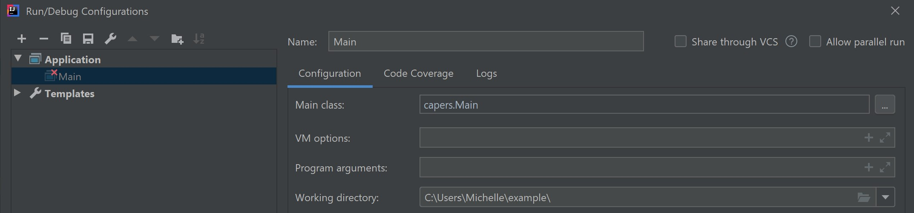

Update 4/10 2PM: Added Tips, FAQs, Misconceptions.
Navigation
- A. Intro
- B. Files and Directories in Java
- C. Serializable
- D. Exercise: Canine Capers
- E. Submission
- F. Tips, FAQs, Misconceptions
- G. Credits
A. Intro
Here's an optional intro video for the lab with some explanations of concepts, examples of usage of methods mentioned in the spec, and an intro to the coding portion of the lab. All the information in the video is covered in the spec and timestamps for topics are in the video description.
So far in this class, you have exclusively made programs whose state only persists while the program is running, and all traces of the program disappear once the program exits. For example, in Project 2, you created a game that you could play while the program was running, but there was no way to save the game state, quit the program, go do some other stuff, and then run the program again, load up your previous progress, and continue playing the game. In this lab, we will go over two methods to make the state of your program persist past the execution of your program: one through writing plain text to a file, and the other through serializing objects to a file. This will be directly applicable Project 3 Gitlet as well as any future projects you want to do where you want to be able to save state between programs.
As always, you can get the skeleton files with the following commands:
git fetch shared
git merge shared/lab12 -m "get lab12 skeleton"B. Files and Directories in Java
Before we jump into manipulating files and directories in Java, let's go through some file system basics.
Current Working Directory
The current working directory (CWD) of a Java program is the directory from where you execute that Java program. Examples follow for Windows & Mac/Linux users - they are very similar, just different stylistically.
Windows
For example, for Windows users, let's say we have this small Java program located in the folder C:/Users/Michelle/example (or ~/example) named Example.java:
// file C:/Users/Michelle/example/Example.java
class Example {
public static void main(String[] args) {
System.out.println(System.getProperty("user.dir"));
}
}This is a program that prints out the CWD of that Java program.
If I ran:
cd C:/Users/Michelle/example/
javac Example.java
java Examplethe output should read:
C:\Users\Michelle\exampleMac & Linux
For example, for Mac & Linux users, let's say we have this small Java program located in the folder /home/Michelle/example (or ~/example) named Example.java:
// file /home/Michelle/example/Example.java
class Example {
public static void main(String[] args) {
System.out.println(System.getProperty("user.dir"));
}
}This is a program that prints out the CWD of that Java program.
If I ran:
cd /home/Michelle/Example
javac Example.java
java Examplethe output should read:
/home/Michelle/exampleIntelliJ In IntelliJ, you can view the CWD of your program under Run > Edit Configurations > Working Directory.
.
Terminal
In terminal / Git Bash, the command pwd will give you the CWD.
Absolute and Relative Paths
A path is the location of a file or directory. There are two kinds of paths: absolute paths and relative paths. An absolute path is the location of a file or directory relative to the root of the file system. In the example above, the absolute path of Example.java was C:/Users/Michelle/example/Example.java (Windows) or /home/Michelle/example/Example.java (Mac/Linux). Notice that these paths start with the root which is C:/ for Windows and / for Mac/Linux. A relative path is the location of a file or directory relative to the CWD of your program. In the example above, if I was in the C:/Users/Michelle/example/ (Windows) or /home/Michelle/example/ (Mac/Linux) folders, then the relative path to Example.java would just be Example.java. If I were in C:/Users/Michelle/ or /home/Michelle/, then the relative path to Example.java would be example/Example.java.
Note: the root of your file system is different from your home directory. Your home directory is usually located at C:/Users/<your username> (Windows) or /home/<your username> (Mac/Linux). We use ~ as a shorthand to refer to your home directory, so when you are at ~/repo, you are actually at C:/Users/<your username>/repo (Windows) or /home/<your username>/repo (Mac/Linux).
When using paths, . refers to the CWD. Therefore, the relative path ./example/Example.java is the same as example/Example.java.
File & Directory Manipulation in Java
The Java File class represents a file or directory in your operating system and allows you to do operations on those files and directories. In this class, you usually will want to be doing operations on files and directories by referring to them to their relative paths. You'll want any new files or directories you create to be in the same directory as where you run your program (in this lab, the ~/repo/lab12 folder) and not some random place on your computer.
Files
You can make a File object in Java with the File constructor and passing in the path to the file:
File f = new File("dummy.txt");The above path is a relative path where we are referring to the file dummy.txt in our Java program's CWD. You can think of this File object as a reference to the actual file dummy.txt - when we create the new File object, we aren't actually creating the dummy.txt file itself, we are just saying, "in the future, when I do operations with f, I want to do these operations on dummy.txt". To actually create this dummy.txt file, we could call
f.createNewFile();and then the file dummy.txt will actually now exist (and you could see it in File Explorer / Finder).
You can check if the file "dummy.txt" already exists or not with the exists method of the File class:
f.exists()We can also write to the file with the following:
Utils.writeContents(f, "Hello World");Now dummy.txt would now have the text "Hello World" in it. Note that Utils is a helper class provided in this lab and project 3 and is not a part of standard Java.
Directories
Directories in Java are also represented with File objects. For example, you can make a File object that represents a directory:
File d = new File("dummy");Similar to files, this directory might not actually exist in your file system. To actually create the folder in your file system, you can run:
d.mkdir();and now there should be a folder called dummy in your CWD.
Summary
There are many more ways to manipulate files in Java, and you can explore more by looking at the File javadocs and Googling. There are a ton of resources online and, if you Google it, doing more extensive file operations in Java can get a bit complicated. I'd recommend understanding the basics by doing this lab, and in the future if you come across a use case you don't know how to handle, then start searching or asking on Piazza. For this lab and Gitlet, we provide you with a Utils.java class that has many useful helper functions for file operations.
C. Serializable
Writing text to files is great and all, but what if we want to save some more complex state in our program? For example, what if we want to be able to save the Board object in LOA so we can come back to it later? We could somehow write a toString method to convert a Board to a String and then write that String to a file. If we do that though, we would also need to figure out how to load the Board by parsing that file, which can get complicated.
Luckily, we have an alternative called serialization which Java has already implemented for us. Serialization is the process of translating an object to a series of bytes that can then be stored in the file. We can then deserialize those bytes and get the original object back.
To enable this feature for a given class in Java, this simply involves implementing the java.io.Serializable interface:
import java.io.Serializable;
class Board implements Serializable {
...
}This interface has no methods; it simply marks its subtypes for the benefit of some special Java classes for performing I/O on objects. For example,
Board b = ....;
File outFile = new File(saveFileName);
try {
ObjectOutputStream out =
new ObjectOutputStream(new FileOutputStream(outFile));
out.writeObject(b);
out.close();
} catch (IOException excp) {
...
}will convert b to a stream of bytes and store it in the file whose name is stored in saveFileName. The object may then be reconstructed with a code sequence such as
Board b;
File inFile = new File(saveFileName);
try {
ObjectInputStream inp =
new ObjectInputStream(new FileInputStream(inFile));
b = (Board) inp.readObject();
inp.close();
} catch (IOException | ClassNotFoundException excp) {
...
b = null;
}The Java runtime does all the work of figuring out what fields need to be converted to bytes and how to do so. We have provided helper function in Utils.java that does the above two for you.
Note: There are some limitations to Serializable that are noted in the Project 3 spec. You will not encounter them in this lab.
D. Exercise: Canine Capers
For this lab, you will be writing a program that will be taking advantage of file operations and serialization. We have provided you with three files:
Main.java: The main method of your program. Run it withjava capers.Main [args]to do the operations specified below. The majority of the FIXMEs in this program are in here.Dog.java: Represents a dog that has a name, breed, and age. Contains a few FIXMEs.Utils.java: Utility functions for file operations and serialization. These are a subset of those provided with Gitlet, so not all will be used.
You can change the skeleton files in any way you want as long as the spec and comment above the main method in Main.java is satisfied. You do not need to worry about error cases or invalid input. You should be able to complete this lab with just the methods provided in Utils.java and other File class methods mentioned in this spec, but feel free to experiment with other methods.
Main
You should allow Main to run with the following three commands:
story [text]: Appends "text" + a newline to a story file in the .capers directory. Additionally, prints out the current story.dog [name] [breed] [age]: Persistently creates a dog with the specified parameters; should also print the dog's toString(). Assume dog names are unique.birthday [name]: Advances a dog's age persistently and prints out a celebratory message.
All persistent data should be stored in a ".capers" directory in the current working directory.
Recommended file structure (you do not have to follow this):
.capers/ -- top level folder for all persistent data
- dogs/ -- folder containing all of the persistent data for dogs
- story -- file containing the current storyYou should not create these manually, your program should create these folders and files.
Note: Naming a folder or file with a period in the front makes it hidden - to be able to see it in terminal, run ls -a instead of just ls. If you want to remove all saved data from your program, just remove the .capers directory (NOT the capers directory) with rm -rf .capers.
Suggested Order of Completion
Please be sure to read the comments above each method in the skeleton for a description of what they do.
- Fill out the
mainmethod in Main.java. This should consist mostly of calling other methods. - Fill out
CAPERS_FOLDERin Main.java, thenDOG_FOLDERin Dog.java, and thensetUpPersistencein Main.java. - Fill out
writeStoryin Main.java. The story command should now work. - Fill out
saveDogand thenfromFilein Dog.java. You will also need to address the FIXME at the top of Dog.java. Remember dog names are unique! - Fill out
makeDogandcelebrateBirthdayin Main.java using methods in Dog.java. You will find thehaveBirthdaymethod in the Dog class useful. The dog and birthday commands should now work.
Each FIXME should take at most around 8 lines, but many are fewer.
Usage
The easiest way to run and test your program is to compile it in terminal with javac and then run it from there. E.g.
cd ~/repo/lab12 # Make sure you are in your lab12 folder (NOT the lab12/capers folder)
make # or javac capers/*.java, make sure to recompile your program each time you make changes
java capers.Main [args] # Run the commands you want! e.g., java story helloFor the story command, if you want to pass in a long string that includes spaces as the argument, you will want to put it in quotes, e.g.
java capers.Main story "hello world"If running in IntelliJ, you will need to use Run > Edit Configurations > Program Arguments to add the arguments.
Useful Util Functions
Useful Util functions (as a start, may need more and you may not need all of them):
writeContents- writes out strings/byte arrays to a filereadContentsAsString- reads in a file as a stringreadContents- reads in a file as a byte arraywriteObject- writes a serializable object to a filereadObject- reads in a serializable object from a file. You can get a Class object by using.class, e.g. Dog.class. join- joins together strings or files into a path. E.g. Utils.join(".capers", "dogs") would give you a File object with the path of ".capers/dogs"
Testing
You should test your program yourself by running it in the command line. The Gradescope autograder will also run a small set of tests. The AG tests are a combination of running these commands in order:
$ java capers.Main story Hello
Hello
$ java capers.Main story World
Hello
World
$ java capers.Main dog Sammie Samoyed 5
Woof! My name is Sammie and I am a Samoyed! I am 5 years old! Woof!
$ java capers.Main birthday Sammie
Woof! My name is Sammie and I am a Samoyed! I am 6 years old! Woof!
Happy birthday! Woof! Woof!
$ java capers.Main dog Larry Lab 11
Woof! My name is Larry and I am a Lab! I am 11 years old! Woof!
$ java capers.Main birthday Sammie
Woof! My name is Sammie and I am a Samoyed! I am 7 years old! Woof!
Happy birthday! Woof! Woof!
$ java capers.Main birthday Larry
Woof! My name is Larry and I am a Lab! I am 12 years old! Woof!
Happy birthday! Woof! Woof!It also ignores whitespace at the beginning and end of the output so don't worry too much about that.
E. Submission
You should have made changes in capers/Main.java and capers/Dog.java. If you worked with a partner, please also update the partner.txt file. You should not be submitting a .capers data folder. Do not use git add . or git add -A to add your files, and git add your files one by one. Submit the lab as always:
git commit -m "submitting lab12"
git tag lab12-x # x is the next highest submission number
git push
git push --tagsThere is no style check for this lab.
F. Tips, FAQs, Misconceptions
Tips
These are tips if you're stuck!
setUpPersistence: InsetUpPersistence, you should make sure that if the files and folders you need for the program to work don't exist yet that they are made.writeStory: You should be usingreadContentsAsStringandwriteContents. Since the story is just plain text (i.e. it's just a string), you do not need to serialize anything.saveDog: You should be usingwriteObject, since Dogs aren't Strings so we want to be able to serialize them. Make sure you're writing your dog to a File object that represents a file and not a folder!fromFile: You should be usingreadObject. This should be similar tosaveDogexcept you're loading a Dog from your filesystem instead of writing it!
FAQs & Misconceptions
writeObject:writeObjecttakes in (1) the File object that represents the file you want to write the object to and (2) the object you want to serialize and write into the file. The first argument should be a File object that represents a file on your filesystem, not a directory.- File objects can represent both files and directories in your filesystem. The only way to differentiate between them is the methods you use with the File object. You can check if a File object represents a directory with
.isDir(), which you shouldn't need for the lab since you should already know which File objects represent files and which represent directories. - Creating a new File object in Java does not create the corresponding file or directory on your computer. The file is only created when you call
.createNewFile()ormkdir()on that File object. You can think of File objects as pointers to files or directories - you can have multiple of them, and whenever you want to actually change the corresponding file or directory, you will need to call specific methods (usually the ones in Utils with "read" and "write" in the name). Utils.join(File d, String s)is shorthand fornew File(File d, String s)(andUtils.join(String d, String s)is shorthand fornew File(new File(d), String s)), both of which will create a new File object that represents the file or folder calledsin theddirectory. Again, this doesn't make the actual file/folder in your filesystem until you call appropriate methods.- When we say "make changes persistently", that means you should make the changes in Java and then also make sure that those changes are reflected on your filesystem by writing those changes back into the appropriate files.
G. Credits
Capers was originally written by Sean Dooher in Fall 2019. Spec and lab adaptation were written by Michelle Hwang in Spring 2020.